Tài liệu này chỉ hướng dẫn những việc bạn cần làm trực tiếp trong Builder. Mỗi ảnh có số đỏ nhỏ tại vị trí cần bấm; phần giải thích số nằm ngay dưới ảnh để không che giao diện.
Quy trình dùng hằng ngày: chọn đúng phần → sửa → kiểm tra máy tính/điện thoại → Lưu nháp → Xuất bản.
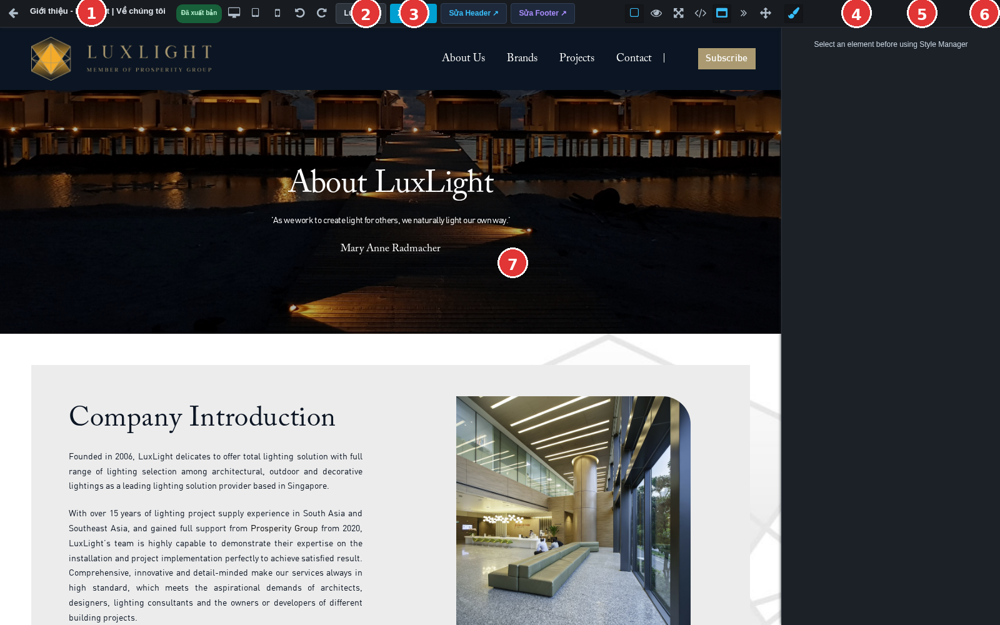
Màn hình Builder hiện tại. Các số chỉ những vùng cần dùng thường xuyên.
Số 1 là tên trang đang sửa. Số 2 là Lưu nháp; số 3 là Xuất bản.
Số 4 mở Kiểu dáng; số 5 mở Cây lớp; số 6 mở Khối để thêm nội dung.
Số 7 là vùng nội dung: bấm vào đây để chọn chữ, ảnh hoặc nút cần sửa.
UI/UX BUILDER · HƯỚNG DẪN DÙNG TRỰC TIẾP
1. Chọn đúng phần trước khi sửa
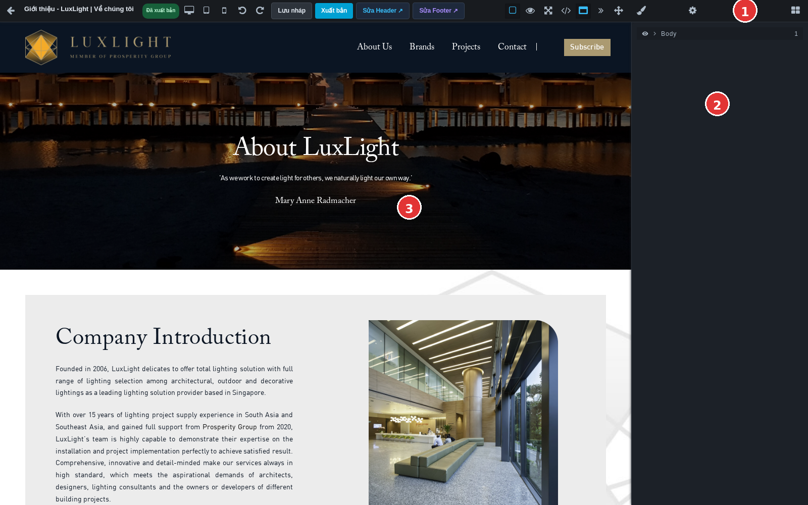
Dùng Cây lớp khi bấm trực tiếp chưa chọn đúng chữ, ảnh hoặc nút.
Bấm phần trên trang cần sửa. Nếu đã chọn đúng, phần đó có viền.
Nếu chọn nhầm vùng lớn, bấm số 1 rồi tìm phần con ở số 2.
Chỉ xóa khi bạn nhìn thấy đúng phần đang có viền.
UI/UX BUILDER · HƯỚNG DẪN DÙNG TRỰC TIẾP
2. Sửa tiêu đề và đoạn chữ
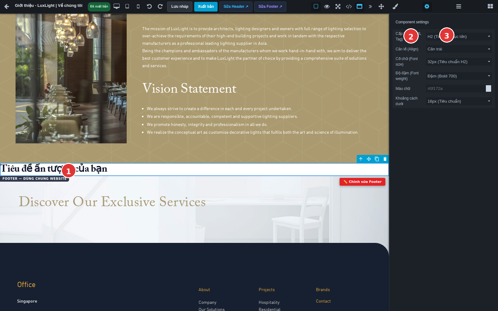
Ảnh chỉ đúng vị trí chọn tiêu đề và bảng thuộc tính của tiêu đề.
Bấm số 1, sau đó nhấp đúp lên chữ trong trang để gõ nội dung mới.
Ở số 2 mở Thuộc tính. Số 3 chọn cấp H1/H2 và cỡ chữ nếu cần.
Sửa xong bấm ra ngoài chữ, nhìn lại trước khi lưu nháp.
UI/UX BUILDER · HƯỚNG DẪN DÙNG TRỰC TIẾP
3. Đổi màu, cỡ chữ và khoảng cách
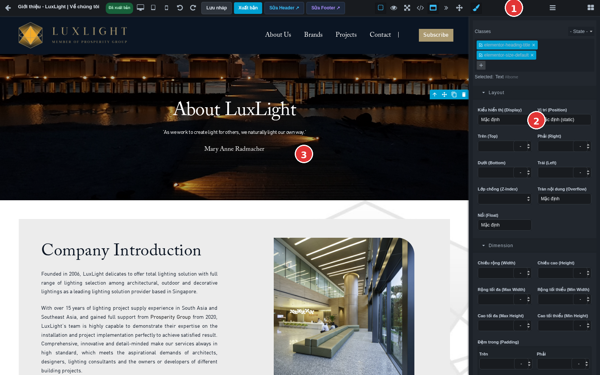
Mở Kiểu dáng sau khi đã chọn phần tử.
Bấm số 1 để mở Kiểu dáng.
Số 2 là nơi đổi màu, cỡ chữ, khoảng đệm và khoảng cách.
Mỗi lần chỉ đổi một vài giá trị rồi quan sát phần được chọn ở số 3.
UI/UX BUILDER · HƯỚNG DẪN DÙNG TRỰC TIẾP
4. Thêm khối mới vào trang
Thư viện Khối để thêm nội dung vào trang đang sửa.
Bấm số 1, chọn nhóm khối ở số 2.
Kéo khối muốn dùng và thả tại vị trí số 3.
Khối mới luôn có nội dung mẫu: thay chữ, ảnh và link trước khi xuất bản.
UI/UX BUILDER · HƯỚNG DẪN DÙNG TRỰC TIẾP
5. Chọn ảnh từ thư viện
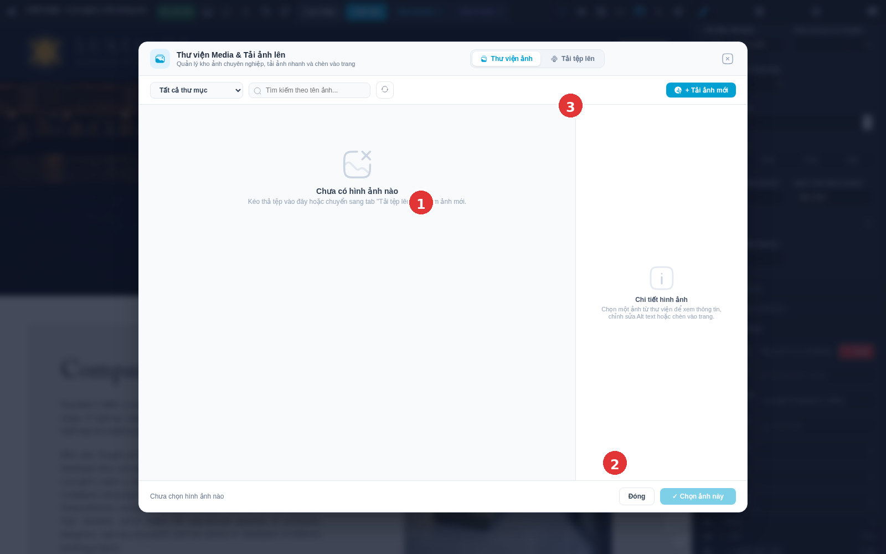
Chọn một ảnh trong thư viện rồi xác nhận.
Dùng ô số 3 để tìm tên ảnh nếu thư viện có nhiều ảnh.
Bấm ảnh ở số 1. Sau đó bấm nút số 2 để dùng ảnh đó.
Quay lại trang và kiểm tra ảnh đã thay đúng chưa.
UI/UX BUILDER · HƯỚNG DẪN DÙNG TRỰC TIẾP
6. Tải ảnh mới lên
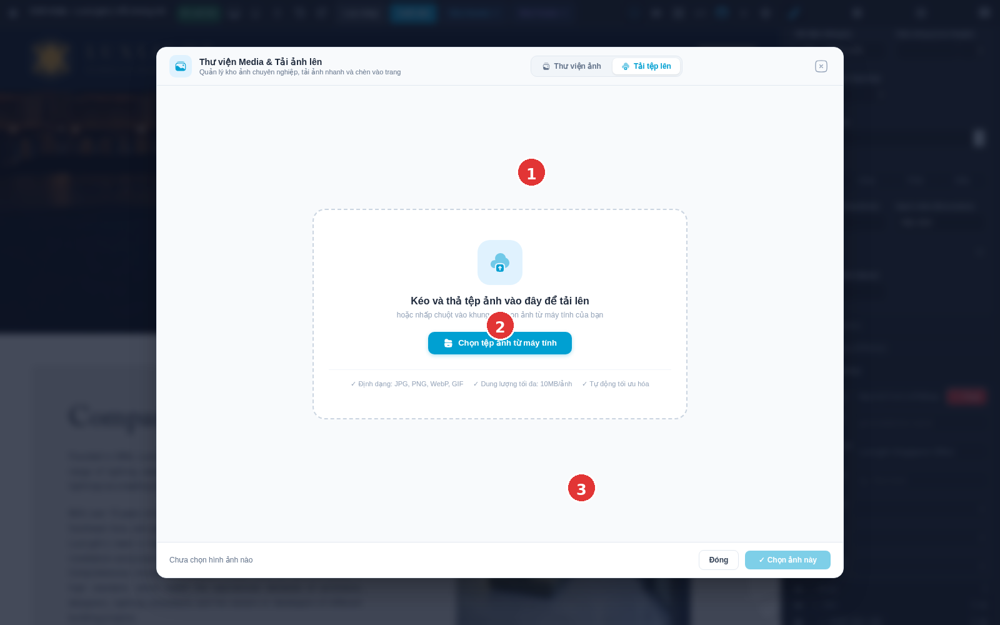
Tải ảnh từ máy tính vào thư viện Media.
Bấm số 1 để chuyển sang phần tải tệp.
Bấm/kéo ảnh vào vùng số 2. Dùng JPG, JPEG, PNG, WebP hoặc GIF.
Chỉ chọn ảnh khi có thông báo thành công ở số 3. Sau đó chọn ảnh đó cho trang.
UI/UX BUILDER · HƯỚNG DẪN DÙNG TRỰC TIẾP
7. Kiểm tra mô tả và cách cắt ảnh
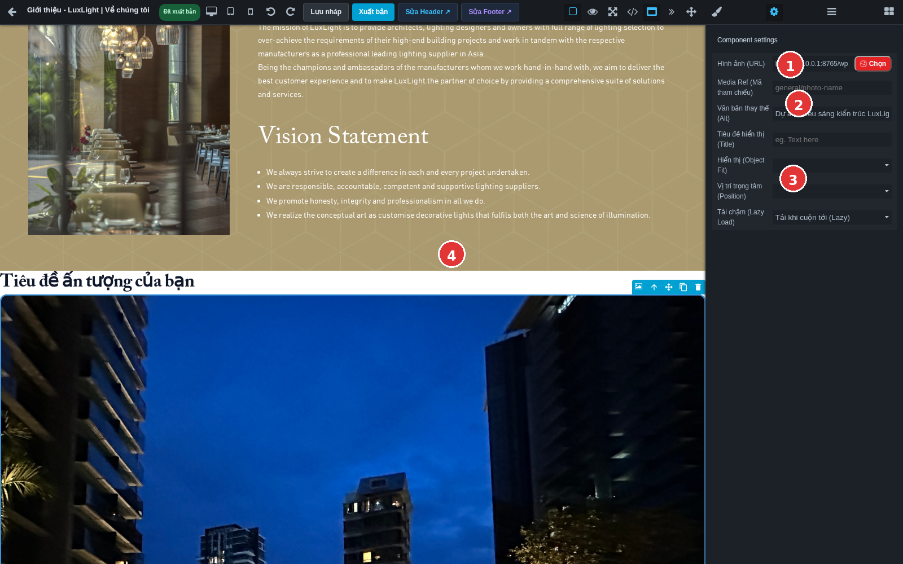
Thuộc tính cần kiểm tra sau khi chọn ảnh.
Bấm số 1 nếu cần thay ảnh khác.
Điền số 2: Alt mô tả đúng ảnh, ví dụ “Không gian showroom”.
Số 3 chọn cách hiển thị ảnh; nhìn ảnh ở số 4 để chắc không bị cắt chủ thể.
UI/UX BUILDER · HƯỚNG DẪN DÙNG TRỰC TIẾP
8. Sửa nút và đường link
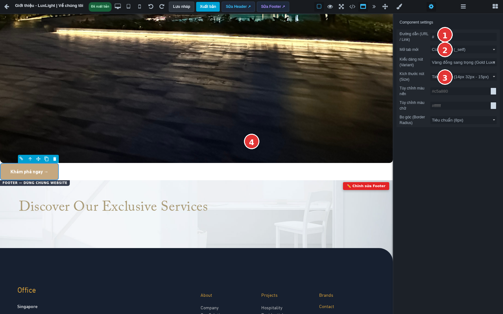
Chọn nút rồi mở Thuộc tính để sửa link.
Số 1: nhập link, ví dụ /lien-he cho trang liên hệ trong website.
Số 2: chỉ chọn tab mới khi cần giữ trang hiện tại.
Số 3: chọn kiểu/cỡ nút. Sau khi xuất bản, bấm thử nút ngoài website.
UI/UX BUILDER · HƯỚNG DẪN DÙNG TRỰC TIẾP
9. Chèn video
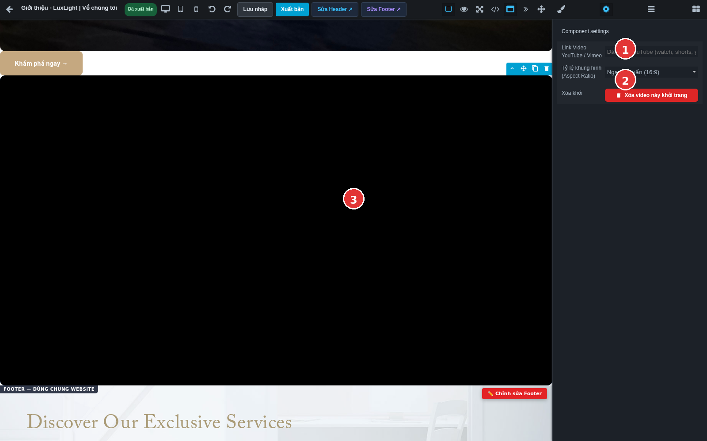
Khối Video chỉ cần link và tỷ lệ khung.
Số 1: dán link YouTube hoặc Vimeo.
Số 2: chọn 16:9 cho video ngang, 9:16 cho video dọc.
Sau xuất bản phải mở website và bấm phát video để kiểm tra.
UI/UX BUILDER · HƯỚNG DẪN DÙNG TRỰC TIẾP
10. Dùng khối dữ liệu động
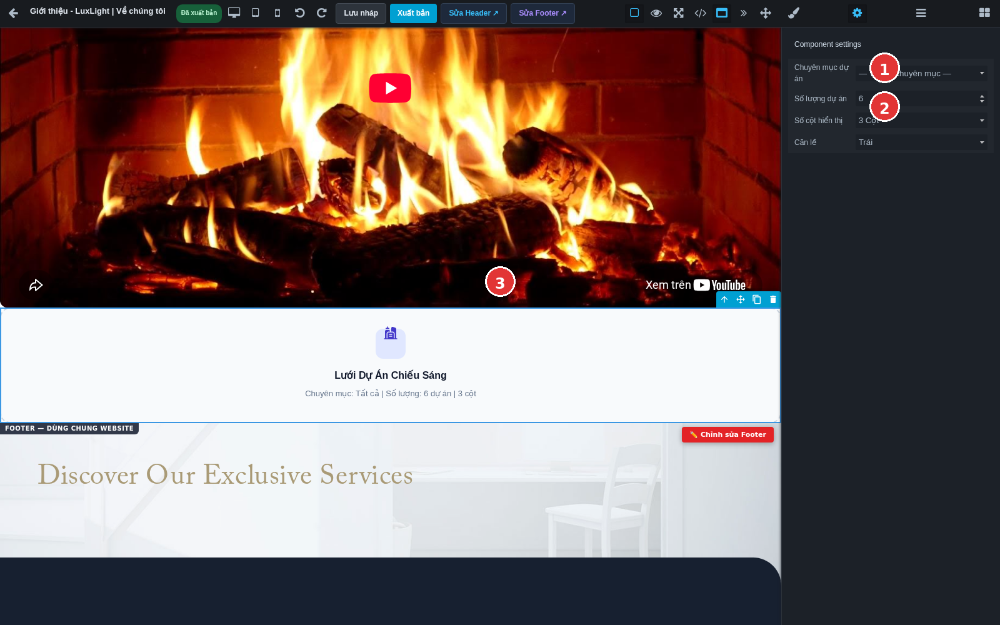
Khối dữ liệu động lấy nội dung từ sản phẩm, bài viết, dự án hoặc đánh giá của hệ thống.
Số 1: chọn danh mục/chuyên mục nếu khối có trường này.
Số 2: chọn số lượng và số cột cần hiển thị.
Không gõ sửa tên hoặc ảnh của từng mục tại đây; sửa ở phần quản lý dữ liệu nguồn.
UI/UX BUILDER · HƯỚNG DẪN DÙNG TRỰC TIẾP
11. Kiểm tra điện thoại
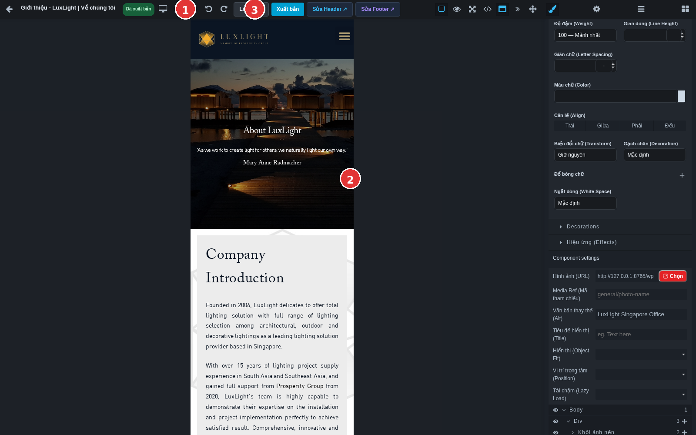
Chế độ Điện thoại là khung 375px trong Builder.
Bấm số 1 để chuyển sang điện thoại.
Cuộn hết trang ở số 2: kiểm tra chữ tràn, ảnh cắt và nút có dễ bấm.
Sửa xong bấm số 3 để lưu nháp.
UI/UX BUILDER · HƯỚNG DẪN DÙNG TRỰC TIẾP
12. Kiểm tra máy tính bảng
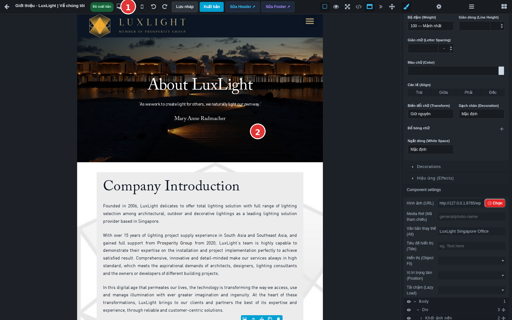
Kiểm tra thêm khung Tablet 768px.
Bấm số 1 để chuyển sang Tablet.
Ở số 2 kiểm tra cột, chữ và nút. Nếu sai, chỉnh rồi quay lại Desktop kiểm tra lại.
UI/UX BUILDER · HƯỚNG DẪN DÙNG TRỰC TIẾP
13. Lưu nháp
Lưu nháp giữ công việc đang sửa, khách chưa thấy thay đổi đó.
Bấm số 2 Lưu nháp sau mỗi nhóm sửa nhỏ.
Chờ thông báo lưu thành công rồi mới chuyển sang phần khác hoặc đóng trang.
Mở lại Builder để kiểm tra nội dung vẫn còn trước khi xuất bản.
UI/UX BUILDER · HƯỚNG DẪN DÙNG TRỰC TIẾP
14. Xuất bản trang
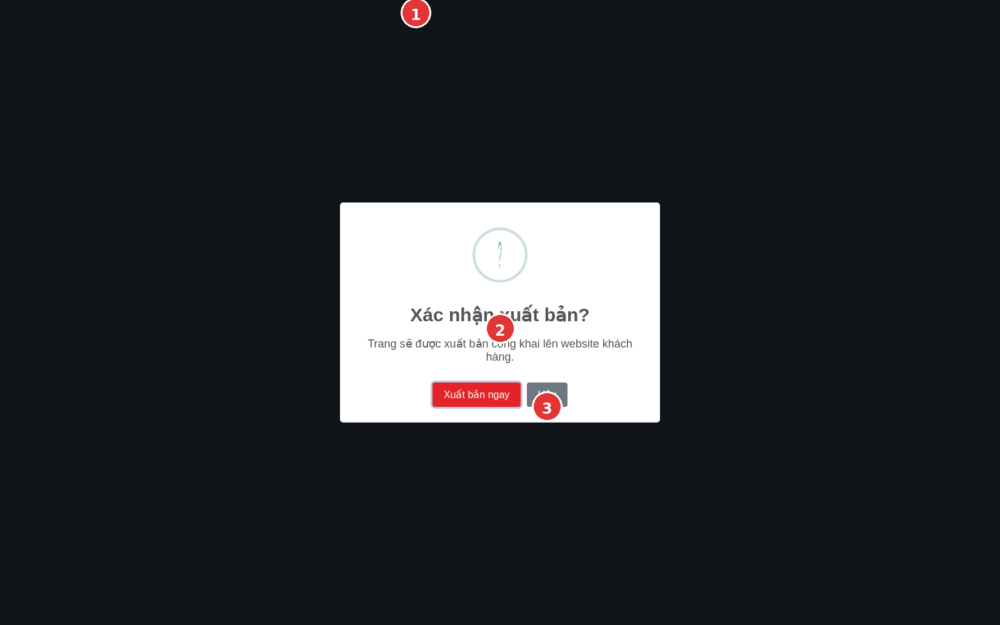
Xuất bản chỉ thực hiện khi nội dung đã được duyệt.
Bấm số 1 để mở hộp xác nhận.
Đọc lại ở số 2. Nếu chưa đúng, đóng hộp và tiếp tục sửa/lưu nháp.
Khi chắc chắn, bấm số 3. Sau đó mở URL thật của trang để kiểm tra.
UI/UX BUILDER · HƯỚNG DẪN DÙNG TRỰC TIẾP
15. Sửa Header
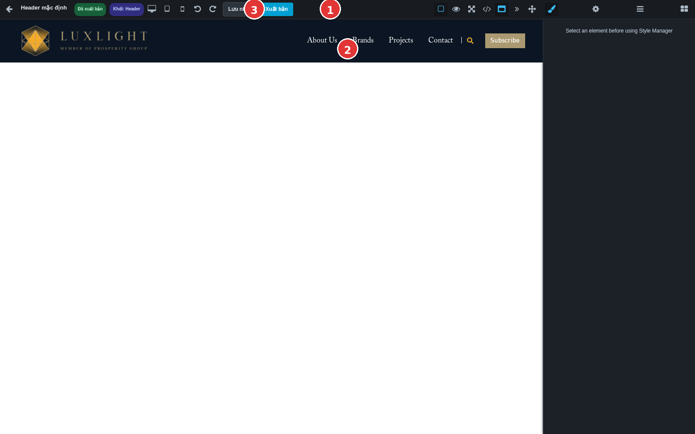
Header thường có logo, menu và nút; một lần xuất bản có thể ảnh hưởng nhiều trang.
Bấm số 1 để mở Header đang dùng cho trang.
Sửa phần trong số 2 như sửa trang thường.
Lưu nháp ở số 3, kiểm tra Desktop và Điện thoại, sau đó mới xuất bản Header.
UI/UX BUILDER · HƯỚNG DẪN DÙNG TRỰC TIẾP
16. Sửa Footer
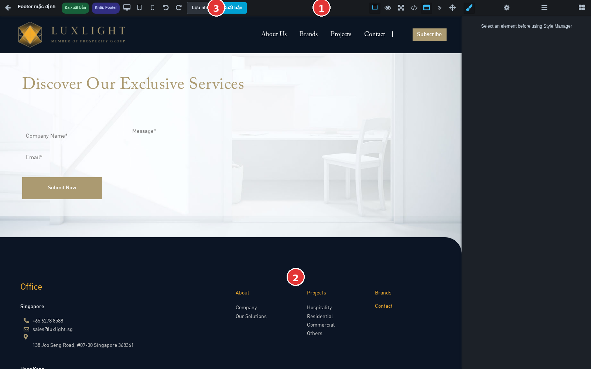
Footer là phần chân trang dùng chung.
Bấm số 1 để mở Footer đang dùng.
Kiểm tra kỹ số điện thoại, email, địa chỉ và link trong vùng số 2.
Lưu nháp ở số 3 rồi kiểm tra nhiều trang trước khi xuất bản.
UI/UX BUILDER · HƯỚNG DẪN DÙNG TRỰC TIẾP
17. Khối dùng chung
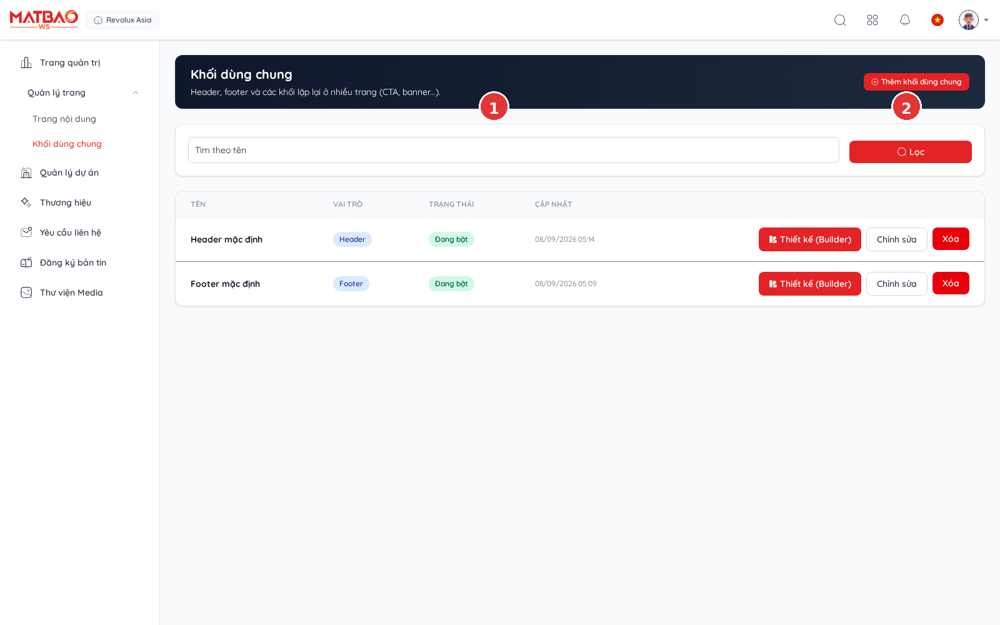
Đây là nơi quản lý Header, Footer và các khối dùng lại ở nhiều trang.
Số 1 là danh sách các phần dùng chung.
Bấm số 2 để mở đúng phần cần sửa.
Sau khi xuất bản một khối dùng chung, kiểm tra các trang đang sử dụng nó.
UI/UX BUILDER · HƯỚNG DẪN DÙNG TRỰC TIẾP
18. Nhóm khối Cơ bản
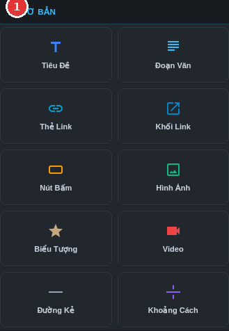
Các tên khối đã hiển thị trực tiếp trên ảnh. Kéo một khối vào trang rồi thay nội dung mẫu.
Bấm số 1 để mở đúng nhóm trong thư viện Khối.
Đọc tên trên từng thẻ khối rồi kéo thả khối cần dùng vào trang.
Lưu nháp và kiểm tra trên điện thoại sau khi thêm khối.
UI/UX BUILDER · HƯỚNG DẪN DÙNG TRỰC TIẾP
19. Nhóm khối Bố cục
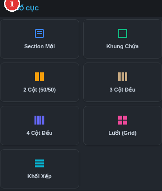
Dùng Section, Khung chứa, Cột và Lưới để sắp xếp nội dung. Chọn khung cha để chỉnh khoảng cách chung.
Bấm số 1 để mở đúng nhóm trong thư viện Khối.
Đọc tên trên từng thẻ khối rồi kéo thả khối cần dùng vào trang.
Lưu nháp và kiểm tra trên điện thoại sau khi thêm khối.
UI/UX BUILDER · HƯỚNG DẪN DÙNG TRỰC TIẾP
20. Nhóm khối Thẻ và nội dung
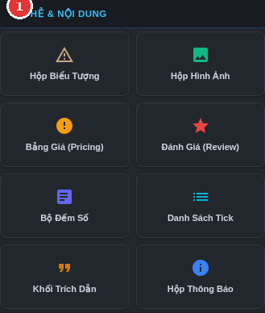
Dùng cho các thẻ dịch vụ, giá, đánh giá, danh sách lợi ích hoặc thông báo. Thay toàn bộ nội dung mẫu.
Bấm số 1 để mở đúng nhóm trong thư viện Khối.
Đọc tên trên từng thẻ khối rồi kéo thả khối cần dùng vào trang.
Lưu nháp và kiểm tra trên điện thoại sau khi thêm khối.
UI/UX BUILDER · HƯỚNG DẪN DÙNG TRỰC TIẾP
21. Nhóm khối Tiện ích
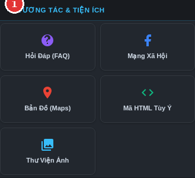
FAQ, mạng xã hội, bản đồ và thư viện ảnh. Kiểm tra từng link ngoài website sau xuất bản.
Bấm số 1 để mở đúng nhóm trong thư viện Khối.
Đọc tên trên từng thẻ khối rồi kéo thả khối cần dùng vào trang.
Lưu nháp và kiểm tra trên điện thoại sau khi thêm khối.
UI/UX BUILDER · HƯỚNG DẪN DÙNG TRỰC TIẾP
22. Nhóm khối Dữ liệu động
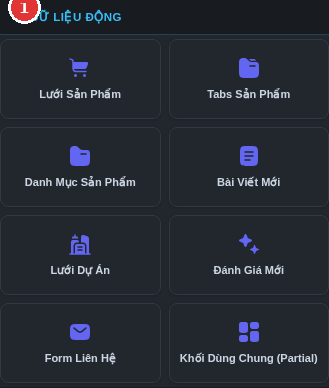
Các khối này lấy dữ liệu hệ thống. Sau khi kéo vào, chọn khối và thiết lập thuộc tính như ở trang dữ liệu động.
Bấm số 1 để mở đúng nhóm trong thư viện Khối.
Đọc tên trên từng thẻ khối rồi kéo thả khối cần dùng vào trang.
Lưu nháp và kiểm tra trên điện thoại sau khi thêm khối.
UI/UX BUILDER · HƯỚNG DẪN DÙNG TRỰC TIẾP
23. Kiểm tra trước khi xuất bản
Kiểm tra
Đã làm
Đúng chữ, ảnh, link và thông tin liên hệ
□
Đã kiểm tra Desktop, Tablet và Điện thoại
□
Đã Lưu nháp, mở lại và nội dung vẫn còn
□
Đã kiểm tra Header/Footer nếu có sửa
□
Đã xuất bản và tải lại URL thật của trang
□
Đã bấm thử nút, link, video, form hoặc FAQ có dùng
□
Nếu website chưa đổi: kiểm tra đúng URL, đúng ngôn ngữ, đã bấm Xuất bản và có thông báo thành công. Nếu vẫn lỗi, gửi tên trang + URL + ảnh chụp lỗi cho người phụ trách.